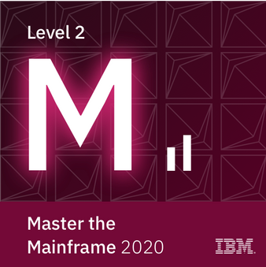

Master the Mainframe
Achieved level 2 - 10 CPD hours
The challenges presented in this IBM introduction to Mainframe programming proved to be formidable.
The ammount of time invested greatly surpassed the 10 hours awarded for CPD but the basis provided and the further challenges can provide really great oportunities for the future.
Check Badge